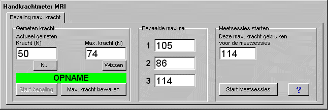
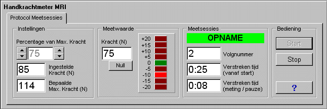

RF 2, Onset Systolische Bloeddruk
|
Deze functie zorgt voor een semi-automatische registratie van het signaal van een krachtopnemer in een handkrachtmeter.
De functie is gemaakt n.a.v. een specifieke vraag en daarom wordt afgeraden om de functie voor andere doeleinden te gebruiken.
Tijdens een meting kan eerst de maximale knijpkracht worden bepaald in een aantal sessies.
Vervolgens kunnen (handmatig bediend) meetsessies worden gestart, waarbij een proefpersoon gedurende een zekere tijd een vooraf ingesteld percentage van de eerder bepaalde maximum knijpkracht moet knijpen.
Het signaal van de krachtopnemer wordt alleen op disk opgeslagen gedurende de bepalingen van de max. knijpkracht en gedurende de actieve meetsessies.
Ingangssignalen
- Meetwaarde van de handkrachtopnemer
Uitgangssignalen (altijd beschikbaar)
- De bepaalde maximale knijpkracht
- De ingestelde gewenste knijpkracht (een percentage van de maximale knijpkracht op enig moment tijdens de meetsessies)

Bovenstaand venster komt in beeld na starten van Midac in Edit-mode of Opname-mode.
Voordat meetsessies starten moet de maximale knijpkracht worden bepaald.
In vak Gemeten kracht staat continu de actueel gemeten knijpkracht. De kracht kan op 0 worden ingesteld door klikken op de knop Null.
Na klikken op de knop Start bepaling wordt de maximale knijpkracht bepaald. Die komt te staan in vak Max. kracht. De inhoud van dit vak kan desgewenst worden gewist door te klikken op de knop wissen. Een bepaalde maximale kracht kan worden opgeslagen door te klikken op knop Max. kracht bewaren. Het maxium komt dan te staan in één van de vakken onder Bepaalde maxima.
Zodra er 3 maxima zijn bepaald, komt de grooste waarde te staan in vak Deze max. kracht gebruikten voor de meetsessies.
Indien nodig kan de bepaling van de maximale kracht meer dan 3x worden uitgevoerd.
Wanneer de maximale kracht is bepaald, kan deze nog worden bewerkt in vak Deze max. kracht gebruikten voor de meetsessies.
Na klikken op de knop Start meetsessies wordt onderdeel Bepaling maximale knijpkracht verlaten en kunnen de meetsessies worden uitgevoerd.

In vak Instellingen staat de eerder Bepaalde Max. kracht.
Hier kan ook een percentage van deze maximale knijpkracht worden ingesteld voor gebruik in een meetsessie.
Met de pijltoetsen aan de linkerzijde van het instelvak kan +/- 1% worden ingesteld, met de pijltoetsen aan de rechterzijde kan +/- 5% worden ingesteld. De met het percentage overeenkomende knijpkracht staat in vak Ingestelde kracht.
De actueel gemeten knijpkracht staat in vak Meetwaarde. De kracht kan op 0 worden ingesteld door klikken op de knop Null.
De Led-bar in dit vak geeft aan in welke mate de gemeten waarde afwijkt van de ingestelde waarde (in N).
In vak Meetsessies geeft een rode balk met de tekst PAUZE of een groene balk met de tekst OPname aan dat een meetsessie niet/wel bezig is.
In vak Volgnummer staat hoeveel meetsessies zijn uitgevoerd.
Verder zijn er vakken waarin de totale verstreken tijd vanaf het starten van onderdeel Meetsessies resp. vanaf de laatste start/stop meetsessie.
Het vak Bediening bevat een knop Start (starten van een nieuwe meetsessie, met het vooraf ingestelde percentage van de maximale kracht) en een knop Stop (een lopende meetsessie afbreken).
Verder is er een Help-knop (die deze helptekst oproept).
Bij terugkijken van een uitgevoerde meting wordt éénmalig een prescan op alle opgeslagen meetdata uitgevoerd. Na die scan zijn 2 extra signalen beschikbaar, te weten:
- de tijdens de meting bepaalde maximale knijpkracht
- de kracht die overeenkomt met het ingestelde percentage van de maximale knijpkracht tijdens de individuele meetsessies.
Beide signalen zijn bij terugkijken in de meting geldig vanaf het startmoment van de eerste meetsessie.
Verder is het begin van elke meetsessies zichtbaar aan een marker. In de bijbehorende markertekst staat het volgnummer van de meetsessie alsmede het ingestelde percentage van de maximale knijpkracht.
© Copyright Instrumentele Dienst 
SM/GvV 22-3-2002